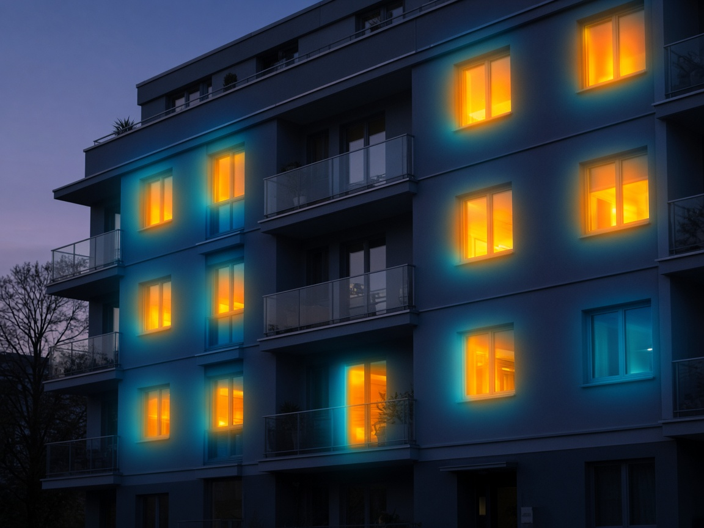
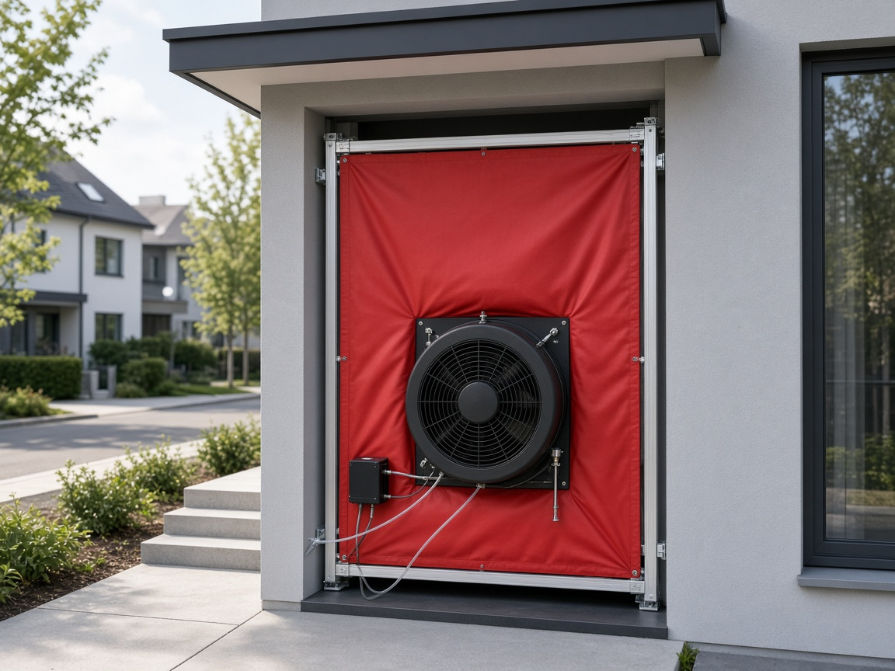
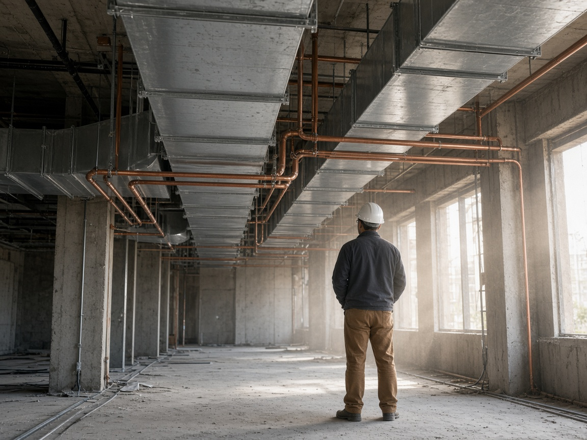
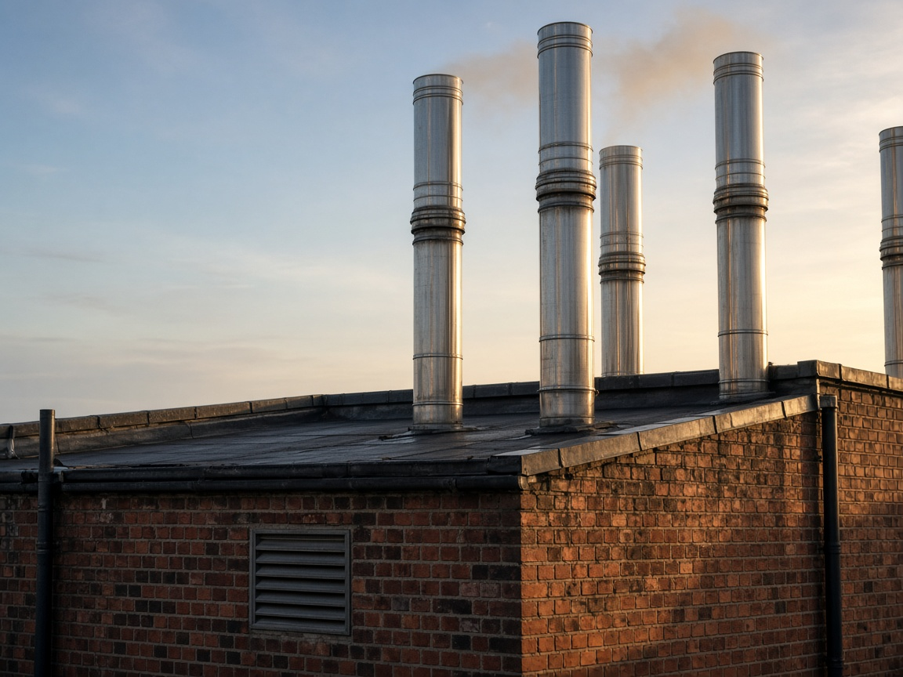

Djelatnosti
Šest područja, od prve skice do mjerenja na gotovoj zgradi.

Strojarski projekt
Pružamo cjelovite usluge projektiranja i stručnog nadzora u području instalacija grijanja, hlađenja, ventilacije i klimatizacije osiguravajući pouzdana, učinkovita i kvalitetno projektirana rješenja za svaki objekt.
Bavimo se projektiranjem strojarskih instalacija, s naglaskom na izradu glavnih i izvedbenih projekata usklađenih s važećim tehničkim propisima, standardima i normama struke.
Naši projekti osiguravaju optimalnu funkcionalnost, energetsku učinkovitost i pouzdanost sustava, uz precizno planiranje i tehničku kvalitetu svakog rješenja.
Zatražite razgovor
Fizika zgrade
Projektiranje toplinske zaštite
Projektiramo toplinsku zaštitu zgrada kako bi se smanjili gubici energije, troškove grijanja i hlađenja te osigurali stabilnu unutarnju temperaturu tijekom cijele godine.
Projektiranje zvučne zaštite
Projektiramo rješenja koja smanjuju prodor buke izvana i između prostorija, čime se povećava privatnost i osigurava mirniji i ugodniji boravak.
Kombinirano projektiranje toplinske i zvučne zaštite
Kombiniranim pristupom toplinskoj i zvučnoj zaštiti osiguravamo energetsku učinkovitost, akustičku udobnost i usklađenost sa zakonskim propisima.
Zatražite razgovor
Energetsko certificiranje
Pružamo stručne usluge energetskog certificiranja i energetskih pregleda zgrada s jednostavnim i složenim tehničkim sustavom, analizu potrošnje energenata, savjetovanja o poboljšanju energetske učinkovitosti zgrada te pripremu i izdavanje zakonski propisane dokumentacije.
Zatražite razgovor
Blower door ispitivanje
Blower door test je precizna dijagnostička metoda kojom mjerimo zrakopropusnost zgrada. Omogućuje otkrivanje svih mjesta kroz koja zrak može neplanirano ulaziti ili izlaziti iz prostora — spojeva zidova, vrata i prozora, prodora instalacija i pukotina.
Ispitivanjem se provjerava kvaliteta brtvljenja zgrade, a zadovoljavanjem propisanih standarda utječe se na povećanje energetske učinkovitosti, smanjenje troškova grijanja i hlađenja te poboljšanje udobnosti unutarnjeg prostora.
Ugradnja prozora, vrata i ostakljenih stijena mora biti izvedena prema RAL principima kako bi se osigurala visoka razina brtvljenja spojeva između krila i okvira te okvira i građevinskog otvora. Time se postiže minimalna razina zrakopropusnosti i dugoročno sprječava pojava površinske kondenzacije uzrokovane toplinskim mostom kao i pojava građevinskih šteta zbog unutrašnje kondenzacije.
Zatražite razgovor
Nadzor
Nudimo profesionalne usluge stručnog nadzora strojarskih instalacija, s naglaskom na usklađenost izvedenih radova s glavnim i izvedbenim projektima i trenutno važećim tehničkim propisima. Kroz sustavan nadzor osiguravamo kvalitetu, funkcionalnost i pouzdanost sustava, uz pravovremeno otkrivanje i otklanjanje mogućih nepravilnosti tijekom izvođenja radova. Specijalizirani smo za planiranje, praćenje i kontrolu radova kako bismo osigurali vrhunsku kvalitetu, sigurnost i energetsku učinkovitost svakog projekta.
Zatražite razgovor
Dimnjaci
Izračun uzgona dimnjaka omogućuje pravilno dimenzioniranje i planiranje dimnjaka kako bi se osigurao učinkoviti izlaz dimnih plinova, čime se jamči optimalan rad i sprječava povrat dima u prostorije. Osim projektiranja novih, važna je i provjera postojećih dimnjaka radi sigurnosti, ispravnog rada sustava grijanja i zaštite zdravlja korisnika.
Zatražite razgovor